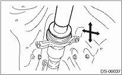

NOTE:
Do not disassemble propeller shaft. Check the following items and replace if necessary.
1. Dents or cracks on the tube surface
2. Deformation or uneven wear on the splines
3. Unsmooth joint operation or abnormal noise
4. Center bearing free play, noise or unsmooth operation.
5. Uneven wear or damaged oil seal
6. Damaged center bearing
Check the following points with the propeller shaft installed in the vehicle.
1. Remove the center exhaust pipe.
Non-turbo model

Turbo model
2. Check for any looseness of the yoke flange mounting bolts which connect to the rear differential and center bearing bracket mounting bolts.
2. SPLINES AND BEARING LOCATIONS
1. Remove the center exhaust pipe.
Non-turbo model
Turbo model
2. Remove the rear exhaust pipe and muffler.
Non-turbo model
Turbo model
3. Turn the propeller shaft by hand to see if there is any excessive free play in the splines. Also move the yoke to see if there is any excessive free play at the spiders or bearings.
1. Remove the center exhaust pipe.
Non-turbo model
Turbo model
2. Remove the rear exhaust pipe and muffler.
Non-turbo model
Turbo model
3. Set the dial gauge with its indicator stem at the center of the propeller shaft tube.
4. Turn the propeller shaft slowly by hands to check for runout of the propeller shaft.
Runout:
Service limit 0.6 mm (0.024 in)
|
(A) |
Propeller shaft |
|
(B) |
Dial gauge |
1. Remove the front and center exhaust pipes.
Non-turbo model
Turbo model
2. Remove the rear exhaust pipe and muffler.
Non-turbo model
Turbo model
3. Move the propeller shaft near the center bearing up, down, left, right by hand, to check for any abnormal free play of the bearings.
